Düşünce ve İrade, tıpkı bir havuzda genişleyen dalgalar gibi PyrE'nin hassas altatomik tetik noktasını arayarak, ona dokunup harekete geçirerek yayıldı. Düşünce; parçacıkları, tozu, dumanı, zerreleri, molekülleri buluyordu. Düşünce ve İrade hepsini değiştiriyordu.
Doç. Franco Torre'nin bir PyrE mermisinin sırrını çözmek için yıpratıcı bir ay geçirdiği Sicilya'da artık ve çökeltiler denize boşalan bir lağım borusuna atılmıştı. Akdeniz akıntıları aylardır bu artıkları deniz dibinden sürüklüyordu. Bir anda elli ft yüksekliğinde kambur bir su tepeciği, kuzeydoğuda Sardinya'dan güneybatıda Tripoli'ye kadar bütün kıyılan taradı. Bir mikrosaniye içinde Akdeniz'in yüzeyi, Pantelleria, Lampedusa, Linosa ve Malta adalarının çevresine dolanmış dev bir solucanın kıvrımlı görüntüsüne büründü.
Artıkların bir kısmı yakılmış, bir yere çökmeden önce, yüzlerce mil yayılacak olan duman ve buharla birlikte bacadan atılmıştı. Bu küçücük tanecikler sonunda, Üzerlerinde dağıldıkları Fas, Cezayir, Libya ve Yunanistan'da inanılmaz bir küçüklük ve yoğunluktaki köredici dakik patlamalarla kendilerini gösterdiler. Ve hâlâ stratosferde süzülmekte olan bazı zerreler, gündüz yıldızları gibi yoğun parlamalarla varlıklarını belli ettiler.
Prof. John Mantley'nin de PyrE'yle aynı şaşırtıcı deneyimi yaşadığı Texas'da artıkların çoğu, aynı zamanda radyoaktif artıkların da toplandığı, kurumuş bir petrol kuyusunun hava bacasından aşağı atılmıştı. Derin bir su tablası maddenin çoğunu emerek yavaş yavaş on beş kilometrekarelik bir alana yaymıştı. On beş kilometrekarelik Texas düzlüğü sarsıntılarla kalın fitilli kadifeye benzedi. İşlenmemiş büyük bir doğal gaz birikintisi
sonunda bir gedik buldu ve yüzeye çıkıp havaya uçan taşların çıkardıkları kıvılcımlarla ateş alarak iki yüz ft.'lik dev bir meşaleye dönüştü.
Çoktan bir kenara atılmış, unutulmuş, kullanılmış bir filtre kâğıdı diskine atılmış bir miligram PyrE, kâğıt makinesine yollanmış ve sonunda hamur haline getirilip dizgi metali kalıbına dökülmüş Glasgow Observer'ın bütün gece baskısını yok etti. Uzun zaman önce gazete kâğıdına dönüştürülen bir laboratuvar önlüğüne sıçramış olan bir PyrE kırıntısı, Lady Shrapnel tarafından yazılmış bir Teşekkür Mektubunu yok ederken bu arada yanında fazladan bir ton birinci sınıf postayı götürdü.
Çoktan atılmış ve şimdi bir Yağmacı-jauntecinin mink ceketinin altına giyilen, kazara PyrE'li bir: asit bileşimine batırılmış bir gömlek kolu, tek bir sert kesişle Yağmacı-jauntecinin bileğini ve elini kopardı. Şimdi bir kül tablası olarak kullanılan bir buharlaştırma kristaline yapışmış bir desimiligram PyrE, hilkat garibesi ticareti yapıp canavar dağıtımı yapan Baker adında birinin bürosunu yakıp kavuran bir yangın başlattı.
Gezegenin bir ucundan diğer ucuna dek tek tek patlamalar, patlama zincirleri, yangın ağları, küçük yangınlar, gökyüzünde meteor parlamaları, büyük kraterler ve dar kanallar toprağı yarıp geçiyor, parçalıyor, bağrından kusuluyordu. Sanki öfkeli bir Tanrı insanlarını yine bir cehennem ateşiyle ziyaret etmişti. Eski St. Patrick'de, Fourmyle'ın laboratuvarında yaklaşık bir gramın onda biri kadar PyrE açıkta kalmıştı. Kalanı, kazara ya da bilerek yapılacak bir psikokinetik ateşlemeden korunduğu bir Tepkisiz Kurşun İzomer kasadaydı. O onda bir gramdan çıkan enerji, şiddetli bir deprem binayı sarsmış gibi duvarları patlatıp zeminde büyük yarıklar açmıştı. Destekler bir an daha sütunları tuttu ve sonra gürültüyle yıkıldı. Kuleler, sivri Tepeler, sütunvari destekler ve çatı gürleyen bir çığ halinde inip; yerdeki alabildiğince geniş kraterin üzerinde karmaşık, tehlikeli bir dengede tereddüt etti. Bir nefes rüzgâr, ufacık bir titreşim ve krater, toz haline gelmiş yıkıntıyla tamamen dolana
kadar çöküntü devam ederdi.
Patlamanın yıldız kadar yüksek ısısı yüzlerce yangın çıkardı ve çöken çatının eski kalın bakırını eritti. Bir miligram PyrE daha patlatılmış olsaydı; ısı metali anında buharlaştırmaya yetecekti. Onun yerine beyaz beyaz parlayıp akmaya başlamıştı. Eriyik bakır çökmüş çatının enkazından süzülüp karmaşık bir ağda ilerleyen korkunç bir çamur gibi ezik taşların, demirlerin, tahtaların ve camların arasından aşağıya doğru akmak için yollar aramaya başladı.
Dagenham ve Y'ang-Yeovil katedralda hemen hemen aynı anda belirdiler. Bir saniye sonra Robin Wendesbury ve ardından da Jisbella McQueen geldi. Bir düzine Haberalma ajanı ve altı Dagenham kuryesi Presteign'ın Jaunte-Muhafızları ve polisle birlikte ortaya çıktı. Parlayan bloğu kordona aldılar ama zaten çok az izleyici vardı. Yeni Yıl Gecesindeki baskının şokundan sonra tek bir patlama New York'un yarısını korkutarak bir kez daha panik içinde güvenli bir yere jaunte'lemelerine yol açmıştı.
Yangının gürültüsü korkunçtu ve iğreti bir dengede duran tonlarca yıkıntının ezici baskısı herkesi tedirgin ediyordu. Herkes bağırmak zorunda kalıyor ama yine de titreşimlerden korkuyordu. Y'ang-Yeovil, Foyle ve Sheffield'la ilgili haberi Dagenham'ın kulağına bağırdı. Dagenham başını sallayıp ölüm gülüşüyle gülümsedi.
"İçeri girmemiz gerekecek," diye bağırdı.
"Yangın giysileri," diye bağırdı Y'ang-Yeovil.
Yok olup bir çift beyaz Felaket Ekibi giysiyle yeniden belirdi. Bu manzara karşısında Robin ve Jisbella deliler gibi bağırarak itiraz etmeye başladı. İki adam onlara aldırmayıp Tepkisiz İzomer zırhları Üzerlerine geçirerek yangın yerine girdiler.
Eski St. Patrick'in içi sanki korkunç bir el tahta, taş ve metalle ağzına kadar dolu bir torbayı karıştırıp darmadağın etmiş gibiydi. Her çatlaktan erimiş bakır dilleri çıkıyor, tahtaları ateşe vererek, taşlan ufalayarak, camları parçalayarak aşağıya doğru yavaş yavaş ilerliyordu. Bakırın aktığı yerlerde yalnızca bir
parlama vardı ama, döküldüğü yerlerden parlak kızgın metal damlacıkları fışkırıyordu.
Bu karmakarışık enkazın altında, eskiden katedralin döşemesinin olduğu yerde siyah bir krater vardı. Patlama döşeme taşlarını ayırıp binanın derinliklerindeki bodrumları, alt bodrumları ve mahzenleri ortaya çıkarmıştı. Mahzenler, hepsi küçük düzensiz yangınlar çıkarmış, belli belirsiz kımıldayan taşlar, kirişler, borular, teller ve Dört Mil Sirki'nin kalıntılarıyla doluydu. İlk bakır kratere damlayıp ortalığı parlak bir erimiş sıçramayla aydınlattı.
Dagenham Y'ang-Yeovil'in dikkatini çekmek için omuzuna vurdu ve bir yeri işaret etti. Kraterin ortasında, karışıklığın ortasında Regis Sheffield'm patlamanın ezip parçaladığı cesedi yatıyordu. Y'ang-Yeovil Dagenham'm omuzuna vurdu ve başka bir yeri işaret etti. Kraterin neredeyse en dibinde Gully Foyle yatıyordu ve erimiş bakır sıçrayıp parlayarak onu aydınlattığında hareket ettiğini gördüler. İki adam da hemen dönüp bir görüşme yapmak için sürünerek katedralden çıktılar.
"Yaşıyor."
"Nasıl olabilir?"
"Tahmin edebilirim. Yakınlarında toplanmış çadır parçalarım gördün mü? Katedralin diğer ucunda başka bir patlama olmuş ve aradaki çadırlar da Foyle'u korumuştur. Sonra başka herhangi bir şey ona çarpmadan zeminde açılan yarıktan düşmüştür."
"Mantıklı geliyor. Onu oradan çıkarmamız gerek. PyrE'nin nerede olduğunu bilen tek kişi o."
"PyrE hâlâ orada olabilir mi ... patlamamış olarak?"
"T.K.İ. kasadaysa evet. O nesne hiçbir şeye tepki vermez. Onu boş ver şimdi. Foyle'u nasıl çıkaracağız?"
"Buradan çalışamayız."
"Neden olmasın?"
"Anlaşılmıyor mu? Yanlış bir adımda bütün yıkıntı çöker." "Aşağıya akan bakırı gördün mü?" "Tanrım, evet!"
"Onu on dakika içinde oradan çıkarmazsak, bir erimiş bakır havuzunun dibinde olacak." "Ne yapabiliriz?" "Küçük bir olasılık var."
"Nedir?"
"Sokağın karşısındaki eski RCA binalarının bodrumları St Patrick'inkiler kadar derin." "Ve?"
"Aşağı inip bir tünel açmaya çalışacağız. Belki Foyle'u aşağıdan çıkarabiliriz."
Bir ekip iki nesildir terk edilmiş ve mühürlü olan eski RCA binalarına daldı. Kemerli mahzenlere, yüzyıllar öncesinin ayrıntılarıyla dolu enkaz halindeki müzelerine indiler. Antika asansör boşluklarını bulup oralardan elektrik tesisatı, ısıtıcı ve dondurucu sistemlerinin bulunduğu alt mahzenlere indiler. Tarih öncesindeki Manhattan Adası'nın derelerinden, bugün hâlâ Üzerlerine yapılmış sokakların altından akan derelerden gelen suyun içine bellerine kadar batarak binanın lağımına indiler.
St. Patrick'in mahzenlerini karşılarına almak için doğu-kuzeydoğu yönünde lağımlarda ilerlerken birden koyu karanlığın ilerde yükselen alevlerle aydınlandığını fark ettiler. Dagenham bağırıp kendini ileri attı. St Patrick'in alt bodrumlarını açan patlama, kendi mahzenleriyle RCA binalarının arasındaki duvarları da ayırmıştı. Taş ve toprağın arasındaki pürüzlü bir yarıktan büyük yangının dibini görebiliyorlardı.
Elli ft ileride Foyle kıvrılmış kirişler, taşlar, borular, metal ve tellerden oluşmuş bir labirentin içinde sıkışıp kalmıştı. Yukarıdan gelen gürültülü bir parlama ve çevresindeki gelişigüzel alevlerle aydınlanıyordu. Giysileri alev almıştı ve dövme yüzünde belirgin bir şekilde parlıyordu. Kapana kısılmış şaşkın bir hayvan gibi yavaş ve tereddütle hareket ediyordu.
"Aman Tanrım!" diye bağırdı Y'ang-Yeovil. "Yanan adam!"
"Ne?"
"İspanyol Merdivenleri'nde gördüğüm Yanan Adam. Boş ver onu şimdi. Ne yapabiliriz?" "İçeri girelim tabii ki."
Birden parlak bir kızgın bakır parçası Foyle'un yakınına doğru süzüldü ve on ft aşağısına damladı. Ardından bir ikinci, bir üçüncü ... bakır yavaş ve sürekli bir akıntı halinde inerek bir havuz oluşturmaya başladı. Dagenham ve Y'ang-Yeovil zırhlarının maskelerini takıp sürünerek duvardaki yarıktan geçmeye çalıştı. Üç dakikalık acı bir mücadeleden sonra labirenti aşıp Foyle'a ulaşamayacaklarını anladılar. Dışarıdan içeriye girmek imkansızdı ama içerden dışarıya çıkılabilirdi. Dagenham ve Y'ang-Yeovil konuşmak üzere geri çekildiler.
"Ona ulaşamıyoruz," diye bağırdı Dagenham, "ama o dışarı çıkabilir."
"Nasıl? Jaunte'leyemediği kesin, yoksa burada olmazdı."
"Hayır. Tırmanabilir. Bak. Önce sola, sonra yukarı gidip şu kirişin yanından döner, sonra altına girip o telleri iterse çıkabilir. Teller içeri doğru itilemiyor, bu yüzden biz ona ulaşamıyoruz, ama dışarı itilebilir, böylece o da çıkabilir. Tek yönlü bir kapı."
Erimiş bakır havuzu Foyle'a doğru yaklaşıyordu.
"Eğer yakında oradan çıkamazsa canlı canlı kavrulacak."
"Onunla konuşmalıyız ... Ne yapması gerektiğini söylemeliyiz."
Adamlar bağırmaya başladı: "Foyle!- Foyle! Foyle!"
Tuzaktaki yanan adam yavaş ve tereddütlü hareket etmeye devam etti. Cızırdayan bakır yağmuru şiddetleniyordu.
"Foyle! Sola dön. Beni duyabiliyor musun? Foyle! Sola dönüp yukarı tırman. Sonra - Foyle!"
"Dinlemiyor. Foyle! Gully Foyle! Bizi duyabiliyor musun?"
"Jiz'i çağır. Belki onu dinler."
"Hayır, Robin. Düşünce gönderebilir. Dinlemek zorunda
kalır."
"Ama yapar mı? Herkesin içinden onu kurtarır mı?" "Yapmak zorunda. Bu nefretten çok büyük bir şey. Bu,
dünyanın şimdiye kadar karşılaştığı en büyük kahrolası şey. Gidip onu getireyim." Y'ang-Yeovil dışarı sürünmeye başlamıştı ki Dagenham onu durdurdu.
"Bekle Yeo. Şuraya bak. Yanıp sönmeye başladı."
"Yanıp sönmek mi?"
"Bak! Sanki bir ateşböceği gibi yanıp sönüyor. Seyret şunu! Bir görünüyor, bir kayboluyor."
Foyle'un görüntüsü alevli bir tuzağa yakalanmış bir ateşböceği gibi hızla bir kayboluyor, bir beliriyordu.
"Şimdi ne yapıyor? Ne yapmaya çalışıyor? Neler oluyor?"
***
Kurtulmaya çalışıyordu. Tuzağa düşmüş bir ateşböceği ya da bir işaret ateşinin alevlerine sıkışıp kalmış bir deniz kuşu gibi çılgınca çırpınıp duruyordu ... kendini bilinmeyene doğru fırlatan kararmış, yanan bir yaratık gibiydi.
Sesleri görüntü gibi algılıyordu, garip desenli bir ışık gibi. Kendi adını bağırdıklarında parlak bir uyaklı şiir görüyordu:
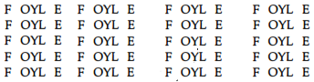
Hareketleri ses gibi algılıyordu. Kıvrılan alevleri, girdaplar oluşturan dumanlan, titreşerek alaylı oyunlar oynayan gölgeleri duyuyordu ve hepsi de yabancı dillerde kulakları sağır edecek kadar yüksek bir sesle konuşuyorlardı.
"BURUU GYARR RAAWV CIRMEYKİNK?" diye sordu duman.
"Aşa. Aşa, rit-kit-dit-zit m'gid," diye cevapladı hızlı gölgeler. "Ooohh. Aaa. Hiiii. Tiii. Oooo. Ahhh," diye bağırışıyordu ısı dalgacıkları.
"Ahhh. Maaa. Paaa. Laaaaaaaaaa!"
Kendi giysilerinin alevleri bile kulaklarında gürleyip anlamsız bir şeyler söylüyordu. "MANTERGAYSTMANN!" diye bağırdılar, "UNVERTRACKÜNGSTEİGN GANZELSSFURS-TIN-LASTENBRUGG!"
Renkler ona acı veriyordu ... sıcak, soğuk, basınç; dayanılmaz yükseklikte ve inanılmaz derinlikte, muazzam hızlanmalar ve ezici sıkıştırmalardan oluşan duyumlardı:
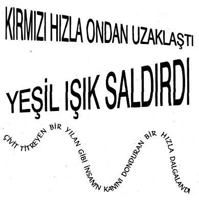
Dokunmak onun için tatmaktı ... tahtaya dokunduğunda ağzında keskin ve kireçli bir tat oluşuyordu, metal tuzdu, do. kunduğu taşların tadı ekşimsiydi, camsa fazla şekerli tatlı gibi
içini bayıltıyordu.
∞
Koku dokunuştu ... Sıcak taşlar yanağını okşayan kadife gibi kokuyordu. Duman ve kül neredeyse ıslak kanaviçe benzeri, derisini tırmalayan sert kumaşlardı. Erimiş metal kalbine indirilen darbeler gibiydi, PyrE patlamasının iyonlaşması da havayı parmaklarının arasından süzülen su gibi kokan ozonla doldurmuştu.
∞
Kör, sağır ve duyumsuz değildi. Duyumları alıyordu, ama bu duyumlar PyrE şokuyla çarpılıp kısa devre yapmış bir sinir sisteminden geçerek geliyorlardı. Sinestezi geçiriyordu, algıların dış dünyadan verileri alıp beyne ilettiği ama beyinde duyumsal algıların birbiriyle karıştığı o nadir konumdaydı. Böylece Foyle için ses görüntü olarak, hareket ses olarak kaydediliyor; renkler acı hislerine, dokunuş tada, tat da dokunuşa dönüşüyordu. Yalnızca Eski St. Patrick'in altındaki yangının labirentinde değil, aynı zamanda kendi ters-duyumlarının kaleidoskopunda da sıkışıp kalmıştı.
Yine çaresiz, yok olmanın o korkunç sınırında, bütün yaşam disiplinlerini ve alışkanlıklarını terk etmişti; ya da belki bunlar ondan sökülüp atılmıştı. Çevre ve deneyimin şartlandırılmış bir ürünü olmaktan çıkıp kaçmayı ve hayatta kalmayı isteyen, elindeki bütün güçleri kullanan, tam gelişmemiş bir yaratık olmuştu. Ve yine iki yıl öncesinin mucizesi gerçekleşti. Bir insan organizmasının, her hücrenin, her dokunun, her sinir ve kasın bölünmemiş enerjisi bu isteği güçlendirdi ve Foyle uzayda jaunte'ledi.
Işık hızını kat kat aşan düşünce hızıyla kıvrılan evrenin jeodezik uzay çizgileri boyunca hızla sürüklenmeye başladı.
Konumsal hızı o kadar korkutucuydu ki, zaman ekseni kıvrıldı ve Geçmişten başlayıp Şimdiyi geçerek Geleceğe uzanan dikey çizgiden ayrıldı. Artık imkânsızlık kavramlarıyla sınırlanmayan insan beyninin mucizesi tarafından yönetilen bu hemen hemen yatay eksen, bu yeni uzay-zaman jeodeziği üzerinde titreyerek ilerliyordu.
Yine Helmut Grant ve Enzio Dandridge ve bir dizi başka denemecinin yapamadığını gerçekleştirmişti. Şuursuz paniği onu daha önceki deneylerin başarısızlıkla sonuçlanmasına yol açan konum-zaman sınırlamalarından vazgeçmeye zorlamıştı. Başka yere değil Başka-zamana jaunte'lemişti. Ama en önemlisi, her insanla birlikte doğan ama hayatın akışıyla derinlere inen, Zaman Okunu ve kişinin bunun üzerindeki konumunu olduğu gibi gösteren dördüncü boyut bilinci, Foyle'da yüzeye yakındı. Muhteşem bir hayal gücü gösterisiyle eksi birin kare-kökü olan 'i'yi hayali bir sayıdan gerçeğe çevirerek uzay-zaman jeodezikleri boyunca Başka-yerlere ve Başka-zamanlara jaunte'ledi.
Jaunte'ledi.
Uzayın donuk boşluğunda süzülen Göçebe' deydi.
Hiçliğe açılan kapının önünde duruyordu.
Soğuk, limon tadındaydı ve vakumsa derisini tırmalayan pençeler. Güneş ve yıldızlar kemiklerini titreten ateşli sıtmaydı.
"GOLMMHA FREDNİS Dİ KLOMOHAMAGENSİN!" diye haykırdı hareket kulaklarında.
..Koridordan aşağı kaybolan, arkası ona dönük bir şekil vardı; omuzunda eşyalarla dolu bakır bir kazan taşıyan, serbest düşme içinde fırlayan, süzülen, sürüklenen bir şekildi bu. Bu Gully Foyle'du.
"MİİHAT JESSROT TO KRONAGEN BAT FLİMMKORK," ' diye uludu adamın hareketinin görüntüsü.
"Aha! O-ho! M'git nat ta kak," diye cevap verdi titreşen ışık ve gölgeler.
"Aaaaaaaaaaa? Yaaaaaaaaa? Yooooooo. O000000!" diye
mırıldandı adamın çevresinde dönüp duran yıkıntı parçacıkları.
Ağzındaki limon tadı dayanılmaz oldu. Derisini tırmalayan pençeler bir işkenceydi. Jaunte'ledi.
Yok olmasının üzerinden bir saniye bile geçmeden Eski St. Patrick'in altındaki fırında yeniden belirdi. Tıpkı bir deniz kuşunun kurtulmaya çalıştığı alevlere tekrar tekrar geri çekilmesi gibi buraya çekiliyordu. Gürüldeyen fırına yalnızca bir an daha tahammül etti.
Jaunte'ledi. /
Gouffre Martel'in derinliklerindeydi.
Kadife karanlık saadet, cennet, sonsuz mutluluktu. -
"Ah!" diye bağırdı huzurla.
"AH!" diye yankılandı sesi ve sesler köredici bir ışık desenine dönüştü.
AHAHAHAHAHAHAHAHAH HAHAHAHAHAHAHAHAHA
AHAHAHAHAHAHAHAHAH HAHAHAHAHAHAHAHAHA
AHAHAHAHAHAHAHAHAH
HAHAHAHAHAHAHAHAHA
Yanan Adam irkildi. Sesten körleşmiş olarak "Durun!" diye bağırdı. Yankının göz kamaştırıcı deseni yeniden belirdi.
DuRunDuRunDuRun
RunDuRunDuRunDuRun
DuRunDuRunDuRunDuRun
RunDuRunDuRunDuRunDuRun
RunDuRunDuRunDuRun
unDuRunDuRunDuR
RunDuRunDuRun
Uzaktaki ayak seslerini, gözleri dikey kuzey akıntılarını yumuşak desenleri olarak gördü.
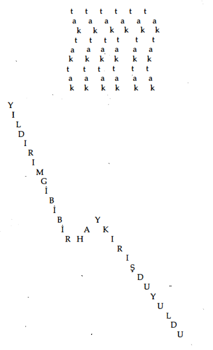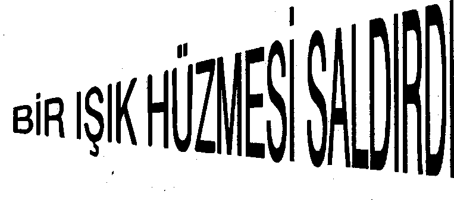
Foyle ve Jisbella McQueen'i jeofonla izleyen Gouffre Martel hastanesindeki arama ekibiydi. Yanan Adam yok oldu ama önce istemeden arama ekibini yok olan kaçakların izinden uzaklaştırmıştı.
Son kayboluşundan yalnızca bir an sonra yine yeniden Eski St. Patrick'in altında belirdi. Uzay-zamanın ters çevrilmiş tepe eğrisinde kendi Şimdi'si eğrideki en alt nokta olduğu için bilinmeyene çılgınca açtığı kanatlar onu kaçınılmaz olarak, kaçmaya çalıştığı Şimdi'ye geri sürükleyen jeodezik uzay-zaman çizgilerine yolluyordu.
Kendini jeodezik çizgiler boyunca yukarı, yukarı itip geçmişe ya da geleceğe gidebiliyordu, ama bir topun sonsuz bir kuyunun eğimli duvarlarından yukarı fırlatılıp bir an orada hareketsiz kaldıktan sonra derinliklere geri yuvarlanması gibi, o da sonunda ister istemez kendi Şimdi'sine düşüyordu.
Ama yine de çaresizliği içinde bilinmeyene doğru kanat çırpıyordu.
Yine jaunte'ledi.
Avustralya kıyılarındaki Jervis plajındaydı.
Dalgaların hareketleri "LOGGER-MİST KROTEHAVEN CALL. LOOGERMİSK MOTESLAVEN DUUL." diye feryat ediyordu.
Dalgaların sesleri sahne ışıklarının parlaklığıyla gözlerini kamaştırıyordu:
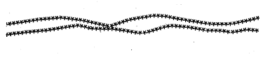
Gully Foyle ve Robin VVendesbury önünde duruyorlardı. Yanan Adam'ın ağzına sirke tadı veren kumlarda bir adamın cesedi yatıyordu. Yüzünü yalayan rüzgarın tadı gazete kağıdına benziyordu.
Foyle ağzını açıp bağırdı. Ses yanan yıldız baloncukları halinde çıktı.
Foyle bir adım attı. Hareketi "GRASH!" diye çınladı.
Yanan Adam jaunte'ledi.
Şangay'da, Dr Sergei Orel'in bürosundaydı.
Foyle yine karşısındaydi ve ışık desenleriyle konuşuyordu:
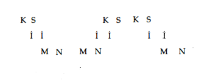
Bir an için Eski St. Patrick'in ızdırabına döndü ve yine jaunte'ledi.
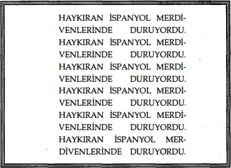
Yanan adam jaunte'ledi. '
Yine limon tadı veren soğuktaydı ve vakum derisini dayanılmaz pençelerle tırmalıyordu. Gümüş bir geminin lombozundan içeri bakıyordu. Arkada Ay'ın dev dağları yükseliyordu. Lombozdan, içerideki kan ve oksijen pompalarının uyumsuz gürültülerini görüp Gully Foyle'un ona doğru attığı adımın feryadını duyabiliyordu. Boşluğun boğazını sıkan pençeleri iyice dayanılmaz hale geldi.
Uzay-zamanın jeodezik çizgileri onu, çılgın çırpınışlarına başlamasından bu yana iki saniyeden az bir sürenin geçtiği Eski St. Patrick'deki Şimdiye geri yolladı. Yanan bir mızrak gibi, bir kere daha kendini bilinmeyene doğru fırlattı.
Mars'taki Sklotsky Mezarındaydı. Lindsey Joyce adındaki solgun yaratık önünde kıvranıyordu.
"HAYIR! HAYIR! HAYIR!" diye bağırıyordu hareketleri.
"CANIMI YAKMA. BENİ ÖLDÜRME. HAYIR LÜTFEN. . . LÜTFEN... LÜTFEN..."
Yanan Adam kaplan ağzını açıp gülmeye başladı. "Acı çekiyor," dedi. Sesinin tınısı gözlerini yaktı.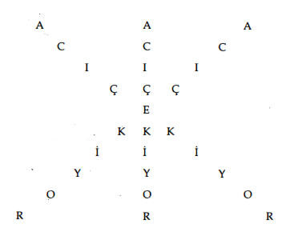
"Kimsin sen?" diye fısıldadı Foyle.
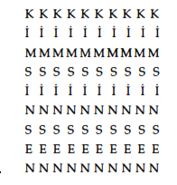
Yanan Adam irkildi. "Çok parlak," dedi. "Daha az ışık."
Foyle . öne doğru bir adım attı. Hareketi "BLAA-GAA-DAA-MAV-FRAA-MİŞLİNGSTONVİSTA!" diye gürledi.
Yanan Adam acı içinde ellerini kulaklarına götürdü.
"Ses çok yüksek," diye bağırdı. "O kadar yüksek sesle hareket etme."
Kıvranan Sklotsky'nin hareketleri hâlâ bağırıyor, yalvarı-yordu: "CANIMI YAKMAYIN. CANIMI YAKMAYIN."
Yanan Adam yine güldü. "Dinle onu. Bağırıyor. Yalvarıyor. Ölmek istemiyor. Acı çekmek istemiyor. Bir dinle onu."
"EMRİ VEREN OLIVIA PRESTEIGN'DI. BEN DEĞİLDİM. CANIMI YAKMAYIN. OLIVIA PRESTEIGN."
"Emri kimin verdiğini söylüyor. Duyamıyor musun? Gözlerinle dinle. Olivia diyor.”
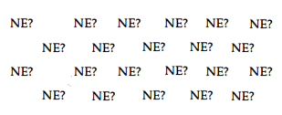
Foyle'un sorusunun satranç tahtası deseninden gelen ışık onun için çok fazlaydı.
"Olivia diyor. Olivia Presteign. Olivia Presteign. Olivia Presteign."
Jaunte'ledi.
Eski St. Patrick'in altındaki kuyuya düştü yeniden ve karman çorman aklı ve umutsuzluğu ona öldüğünü söyledi. Bu Gully Foyle'un sonuydu. Bu sonsuzluktu ve cehennem gerçekti. Gördükleri en son ölüm anında geçmişin paramparça görüntülerinin aklından geçmesiydi. Katlandıklarına zamanın sonuna dek katlanmak zorunda kalacaktı. Ölmüştü. Öldüğünü biliyordu.
Sonsuzluğa teslim olmayı reddetti. Yine bilinmeyene kanat çırptı.
Yanan Adam jaunte'ledi.
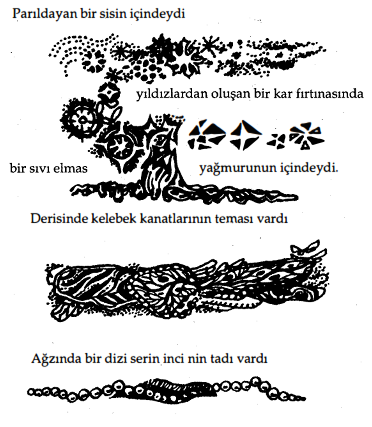
Birbirine girmiş kaleidoskopik duyumlarıyla nerede olduğunu bilemiyordu, ama sonsuza kadar bu Hiçbiryer'de kalmak istediğini biliyordu.
"Merhaba Gully."
"O da kim?"
"Ben Robin."
"Robin mi?"
"Eski Robin Wendesbury."
"Eski mi?"
"ŞimdikiRobin Yeovil." "Anlamıyorum. Öldüm mü?" "Hayır Gully." "Neredeyim?"
"Eski St Patrick'den çok çok uzaklarda." "Ama nerede?"
"Bunu açıklayacak zaman yok Gully. Burada yalnızca birkaç saniyen var." "Neden?"
"Çünkü daha uzay-zamanda jaunte'lemeyi öğrenmedin. Geriye dönüp öğrenmen gerek."
"Ama biliyorum. Bilmem gerek. Sheffield Göçebe'ye jaunte'lediğimi söyledi ... altı yüz bin mil."
"O zamanki bir kazaydı Gully ve yeniden jaunte'leyeceksin ... kendi kendini eğittikten sonra . . . Ama şimdi yapamıyorsun. Daha nasıl tutunacağını. .. herhangi bir Şimdi'yi gerçeğe nasıl dönüştüreceğini bilmiyorsun. Birkaç saniye içinde Eski St. Patrick'e düşeceksin yeniden."
"Robin, şimdi hatırladım. Senin için kötü haberlerim var."
"Biliyorum Gully."
"Annen ve kız kardeşlerin ölmüş."
"Uzun zamandır biliyorum Gully."
"Ne kadar uzun zamandır?"
"Otuz yıldır."
"Bu imkansız."
"Hayır değil. Eski St. Patrick'den çok çok uzaklardasın. Sana kendini yangından nasıl kurtaracağını anlatmak istiyordum, Gully. Dinleyecek misin?"
"Ölmedim mi?"
"Hayır."
"Dinleyeceğim."
"Duyumların karmakarışık. Yakında geçecek ama sana sağ sol ya da yukarı aşağı diye anlatmayacağım. Şimdi anlayabileceğin gibi anlatacağım."
"Neden bana yardım ediyorsun .... sana bütün yaptıklarımdan sonra?"
"Hepsi bağışlandı ve unutuldu Gully. Şimdi beni dinle. Eski St. Patrick'e döndüğünde en yüksek sesli gölgeleri karşına alana dek dön. Anladın mı?"
"Evet."
"Teninde derin bir karıncalanma hissedene kadar seslere doğru ilerle. Sonra dur. "
"Sonra durayım."
"Yarım bir dönüş yapıp basınç ve düşme hissini bul. Onu izle." "Onu izleyeyim."
"Parlak bir ışık perdesinden geçip kinin tadına geleceksin. Kinin tadı gerçekte bir tel yığını. Hafif bir çekiç sesi duyana kadar kinini iterek ilerle. Güvende olacaksın."
"Bütün bunları nereden biliyorsun Robin?"
"Bir uzman anlattı Gully." Gülmeye benzer bir his vardı. "Her an geçmişe düşebilirsin artık. Peter ve Saul da burada. Au revoir ve iyi şanslar diyorlar. Ve Jiz Dagenham da öyle. İyi şanslar Gully hayatım ... "
"Geçmiş mi? Burası gelecek mi?"
"Evet Gully."
"Ben de burada mıyım? Olivia-?"
Ve ardından birden uzay-zaman çizgilerinden aşağıya, aşağıya, aşağıya, Şimdi'nin dehşet verici kuyusuna doğru düşmeye başladı.